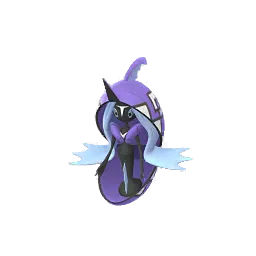
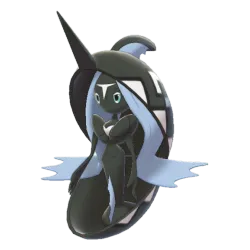

Raid Boss Overview – Tapu Fini
Tapu Fini is a Legendary Tier 5 raid boss known for its high bulk, defensive typing, and strong PvP relevance. Unlike pure DPS-focused bosses, it is designed to test team efficiency and counter selection rather than raw damage output.
Why Tapu Fini Matters
Key reasons:
- Strong in Great League and Ultra League
- Very bulky and consistent in PvP
- Unique typing: Water + Fairy
Meta impact:
- Counters Dragon, Fighting, and Dark types
- Forces Steel-type usage in PvP
- Frequently appears in competitive team builds
Raid Utility
- Not a top raid attacker
- Mostly raided for:
- Pokédex entry
- PvP IV hunting
- Collection value
Difficulty Level
Overall Difficulty: Medium–Hard (Tier 5 Legendary)
- Tapu Fini is not the hardest Legendary raid, but it is also not easy.
Beginner Level
- Hard
- Requires:
- 5–8 players (depending on levels)
- Mistakes in counters make it feel much harder
Intermediate Level
- Moderate
- Can be cleared with:
- 4–5 strong players
- Proper counter selection is important
Advanced Level
- Easy–Moderate
- 3–4 optimized players can win
- Efficient Steel and Poison counters help a lot
Expert Level
- Very manageable
- Can be done with:
- 2–3 high-level trainers
- Requires:
- Weather boost
- Top counters (Steel/Poison)
What Makes It Difficult?
High Bulk
- Tapu Fini has strong defensive stats
- Battles feel longer than average raids
Water/Fairy Typing
- Resists:
- Fighting
- Dark
- Bug
- Dragon
Limited Weaknesses
- Weak mainly to:
- Steel
- Poison
Tapu Fini Moveset Guide
Tapu Fini is a bulky Water/Fairy-type Legendary Pokémon known for:
- Strong defensive stats
- Excellent typing
- Great PvP performance
- Decent utility in raids
Its movepool focuses on:
- Water damage
- Fairy coverage
- Utility pressure in PvP
Fast Moves
Fast Moves generate energy quickly and apply constant pressure.
Tapu Fini Fast Moves Table
| Fast Move | Type | Damage | Energy Gain | PvP Rating | PvE Rating | Notes |
|---|---|---|---|---|---|---|
| Water Gun | Water | Medium | Average | ⭐⭐⭐ | ⭐⭐⭐ | Consistent Water-type pressure |
| Hidden Power | Variable | Medium | Low | ⭐ | ⭐⭐ | Unreliable due to random typing |
Best Fast Move: Water Gun
Best overall move because:
- Reliable energy generation
- STAB bonus
- Smooth PvP performance
- Better raid consistency
Charged Moves
Charged Moves define Tapu Fini’s actual threat level.
Charged Moves Table
| Charged Move | Type | Power | PvP Value | PvE Value | Purpose |
|---|---|---|---|---|---|
| Surf | Water | Medium | ⭐⭐⭐⭐⭐ | ⭐⭐⭐⭐ | Main spam move |
| Moonblast | Fairy | High | ⭐⭐⭐⭐⭐ | ⭐⭐⭐⭐ | Heavy Fairy damage |
| Ice Beam | Ice | Medium | ⭐⭐⭐⭐ | ⭐⭐⭐ | Coverage against Grass/Dragon |
| Hydro Pump | Water | Very High | ⭐⭐ | ⭐⭐⭐⭐ | Slow but powerful |
| Nature’s Madness | Fairy | Special | ⭐⭐⭐⭐⭐ | ⭐⭐ | Excellent PvP shield pressure |
Best Movesets
Best PvP Moveset
| Slot | Move |
|---|---|
| Fast Move | Water Gun |
| Charged Move 1 | Surf |
| Charged Move 2 | Moonblast / Nature’s Madness |
Why?
- Surf provides spam pressure
- Moonblast hits Dragons/Darks hard
- Nature’s Madness gives excellent shield baiting
Best Raid Attacker Moveset
| Slot | Move |
|---|---|
| Fast Move | Water Gun |
| Charged Move | Hydro Pump |
Why?
- Highest Water-type damage output available.
Elite Moves
Elite Moves are rare/special moves obtainable through:
- Events
- Elite TMs
- Special raid windows
Elite Move Table
| Elite Move | Type | Importance | Worth Elite TM? |
|---|---|---|---|
| Nature’s Madness | Fairy | Extremely strong in PvP | YES |
Why Nature’s Madness Matters
Nature’s Madness:
- Applies strong shield pressure
- Improves neutral matchups
- Makes Tapu Fini much harder to counter
Tapu Fini Raid Boss Moves
When faced as a raid boss, Tapu Fini can use different move combinations:
Possible Raid Boss Fast Moves
| Fast Move | Threat Level | Notes |
|---|---|---|
| Water Gun | Medium | Constant Water damage |
| Hidden Power | Variable | Depends on typing |
Possible Raid Boss Charged Moves
| Charged Move | Threat Level | Dangerous Against |
|---|---|---|
| Moonblast | High | Dragons, Dark, Fighting |
| Hydro Pump | Very High | Fire, Rock, Ground |
| Ice Beam | High | Grass, Dragon |
| Surf | Medium | General spam damage |
Dangerous Moves
Some Tapu Fini moves are significantly harder to handle in raids.
| Move | Why Dangerous |
|---|---|
| Hydro Pump | Massive one-shot potential |
| Moonblast | Heavy Fairy burst damage |
| Ice Beam | Destroys Grass counters |
Hardest Moveset Combination
| Fast Move | Charged Move | Difficulty |
|---|---|---|
| Water Gun | Hydro Pump | ⭐⭐⭐⭐⭐ |
Why?
- Constant Water pressure
- Huge charged burst damage
- Punishes weaker counters
Counter Strategy vs Dangerous Moves
| Dangerous Move | Best Counter Strategy |
|---|---|
| Hydro Pump | Use bulky Electric/Grass Pokémon |
| Moonblast | Avoid Dragon attackers |
| Ice Beam | Avoid fragile Grass counters |
PvP Move Strategy
Surf Spam
- Force shields
- Maintain pressure
- Control pacing
Moonblast Nukes
- Hits extremely hard
- Can lower opponent attack
- Wins many neutral fights
Nature’s Madness Utility
- Applies consistent pressure
- Weakens bulky opponents
- Makes shield decisions difficult
Tapu Fini Performance Guide
Tapu Fini is a Water/Fairy-type Legendary Pokémon known for:
- Incredible bulk and survivability
- Strong defensive typing
- Excellent utility moves
- Dominance in PvP formats
- Great anti-Dragon and anti-Dark matchups
Typing Breakdown
Strengths
Tapu Fini resists:
- Fire
- Water
- Ice
- Fighting
- Bug
- Dark
- Dragon (double resistance)
Weaknesses
Tapu Fini is weak to:
- Electric
- Grass
- Poison
Stats Overview
| Stat | Rating |
|---|---|
| Attack | Medium |
| Defense | Very High |
| HP | High |
| Bulk | Excellent |
| PvP Value | Elite |
| Raid Damage | Average |
| Gym Defense | Good |
Tapu Fini in PvP
Overall PvP Rating
| League | Performance |
|---|---|
| Great League | Excellent |
| Ultra League | Meta Dominant |
| Master League | Good |
| Limited Cups | Outstanding |
Tapu Fini shines because of:
- Bulk
- Shield pressure
- Fast energy gain
- Anti-meta typing
Best PvP Moveset
Recommended Moves
| Move Type | Move |
|---|---|
| Fast Move | Water Gun |
| Charged Move | Surf |
| Charged Move | Moonblast |
Alternative charged moves:
- Nature’s Madness
- Ice Beam
Great League Performance
Why Tapu Fini Is Strong
In Great League, Tapu Fini:
- Beats Dragons easily
- Handles Dark-types well
- Survives long battles
- Applies constant shield pressure with Surf
Strong Against
- Medicham
- Sableye
- Umbreon
- Altaria
- Bastiodon
- Scrafty
Weak Against
- Venusaur
- Lanturn
- Registeel
- Trevenant
Ultra League Performance
One of the Best Ultra League Pokémon
Tapu Fini is extremely strong in Ultra League because:
- Its bulk scales perfectly
- Fairy typing is valuable
- Surf spam becomes oppressive
- Dragon resistance dominates many matchups
Key Wins
- Giratina
- Cobalion
- Obstagoon
- Talonflame
- Scrafty
Main Threats
- Virizion
- Ampharos
- Tentacruel
- Registeel
Master League Performance
Good But Not Dominant
In Master League:
- Bulk remains useful
- Dragon resistance is valuable
- Damage output becomes less threatening
Strong Against
- Dragonite
- Yveltal
- Garchomp
- Hydreigon
Problems
- Loses to many Electric-types
- Steel-types wall it hard
- Lower attack than Master League monsters
Tapu Fini in Various Cups
Fantasy Cup
One of the best picks because:
- Counters Dragons
- Beats Fighters
- Handles Dark-types
Halloween Cup
Great because:
- Fairy typing is valuable
- Handles Dark and Fighting Pokémon
- Bulky enough for long matches
Love Cup
Strong due to:
- Bulk
- Consistent Surf pressure
- Strong neutral coverage
Water Cup
Useful because:
- Fairy typing gives unique advantages
- Beats many Water mirrors
- Can threaten Dragons
PvP Battle Style
How to Use Tapu Fini
Tapu Fini works excellently as:
- Safe switch
- Defensive pivot
- Closer
Shield Pressure
- Surf is cheap and spammy, forcing shields repeatedly.
Endgame Closer
- Moonblast can heavily damage weakened teams late game.
Tapu Fini in PvE
Raid Attacker Performance
| Role | Rating |
|---|---|
| Water Attacker | Average |
| Fairy Attacker | Decent |
| Overall PvE Value | Moderate |
Problems in PvE
Compared to top attackers, Tapu Fini lacks:
- High attack stat
- Fast damage pressure
- Top-tier raid DPS
Better Water-Type Raid Attackers
These Pokémon outperform Tapu Fini:
- Kyogre
- Primal Kyogre
- Mega Swampert
- Greninja
Better Fairy-Type Raid Attackers
These Pokémon usually perform better:
- Mega Gardevoir
- Shadow Gardevoir
- Xerneas
- Mega Diancie
Best PvE Moveset
| Move Type | Move |
|---|---|
| Fast Move | Water Gun |
| Charged Move | Surf |
Alternative:
- Nature’s Madness
- Moonblast
Tapu Fini in Raids
Tapu Fini raids are usually:
- Moderate difficulty
- Easier with Electric and Grass attackers
Best Counters
- Zekrom
- Mega Sceptile
- Kartana
- Xurkitree
- Mega Venusaur
- Raikou
Raid Difficulty
| Player Count | Difficulty |
|---|---|
| Solo | Impossible |
| Duo | Very Hard |
| Trio | Comfortable |
| 5+ Trainers | Easy |
Weather Boost
Boosted By
- Rainy Weather
- Cloudy Weather
Dangerous Weather Against It
- Sunny Weather boosts Grass attackers
- Rain boosts Electric attackers
Tapu Fini in Gyms
Gym Defense Rating: Good
Why it works:
- High bulk
- Annoying typing
- Survives long battles
Problems as Gym Defender
However:
- Steel attackers defeat it easily
- Electric Pokémon pressure it hard
- Not as annoying as Blissey or Chansey
Best Gym Usage
Tapu Fini works best:
- In mixed gym lineups
- Alongside Dragon-resistant defenders
- As a bulky mid-slot defender
Team Synergy
Best Partners in PvP
Great League
- Galarian Stunfisk
- Talonflame
- Noctowl
Ultra League
- Giratina
- Registeel
- Cobalion
Master League
- Dialga
- Groudon
- Lugia
Is Tapu Fini Worth Investing In?
| Category | Worth It? |
|---|---|
| Great League | Yes |
| Ultra League | Absolutely |
| Master League | Situational |
| Raids/PvE | Limited |
| Gym Defense | Good |
| Limited Cups | Excellent |
Tapu Fini Raid Strategy Guide
Tapu Fini is one of the trickiest Legendary raids because of its:
- Excellent bulk
- Annoying Water/Fairy typing
- Strong charged attacks
It may not hit as hard as some raid bosses, but it survives for a long time.
Raid Difficulty Overview
| Group Size | Difficulty |
|---|---|
| Solo | Nearly Impossible |
| Duo | Very difficult |
| Trio | Comfortable |
| 4-6 Players | Easy |
| Large Group | Very Easy |
Solo Strategy
Is Solo Possible?
Technically possible only under:
- Extreme weather boost
- Maxed counters
- Shadow Pokémon
- Mega support
- Best friend boosts
Duo Strategy
Difficulty: Hard
A duo is achievable but requires:
- Strong friendship bonus
- Weather advantage
- Optimized teams
Recommended Duo Setup
Player 1
- Mega Electric or Mega Grass
Player 2
- Shadow + Legendary counters
Best Duo Teams
| Type | Best Pokémon |
|---|---|
| Electric | Zekrom, Xurkitree, Thundurus |
| Grass | Kartana, Mega Sceptile |
| Mega Support | Mega Venusaur |
Duo Challenges
- Tapu Fini is extremely tanky
- Moonblast destroys Dragons
- Hydro Pump can one-shot fragile attackers
Trio Strategy
Recommended Group Size
This is the safest small-team setup. Advantages:
- Comfortable timer
- Easier relobbies
- Less pressure on perfect IVs
Trio Team Balance
Player 1
- Mega Grass support
Player 2
- Electric DPS
Player 3
- Mixed Electric + Grass attackers
Best Trio Strategy
- Keep Mega boost active
- Focus Electric damage
- Dodge only big charged attacks
Beginner Strategy
Recommended Players
- 5–8 trainers
- Level 30+
Best Beginner Counters
| Easy Pokémon | Why Good |
|---|---|
| Raikou | Strong Electric damage |
| Magnezone | Steel resistances |
| Roserade | Good Grass DPS |
| Jolteon | Accessible option |
| Venusaur | Bulk + Grass damage |
Beginner Tips
- Use recommended teams only if necessary
- Revive quickly
- Focus surviving instead of dodging everything
Intermediate Strategy
Recommended Players
- 3–5 trainers
- Level 35–45 accounts
Intermediate Focus
- Build specialized counters
- Use type advantages properly
- Coordinate Mega Evolutions
Recommended Megas
- Mega Sceptile
- Mega Venusaur
- Mega Manectric
Common Mistakes
- Using Dragon-types
- Ignoring Fairy damage
- Using weak Water attackers
Advanced Strategy
Recommended Players
- Duo/Trio experts
- High IV teams
- Optimized shadows
Advanced Techniques
Mega Rotation
- Coordinate Mega boosts between players.
Energy Optimization
- Use:
- Fast-charging Electric attackers
- High DPS shadows
Smart Dodging
- Dodge only:
- Moonblast
- Hydro Pump
Expert Strategy
Experts focus on:
- Maximum DPS
- Fastest clear time
- Efficient relobbies
Expert Team Core
| Pokémon | Role |
|---|---|
| Shadow Raikou | Electric DPS |
| Xurkitree | Glass cannon |
| Kartana | Grass DPS |
| Zekrom | Balanced attacker |
Expert Tactics
Pre-Lobby Team Building
- Prepare:
- Backup teams
- Relobby party
- Mega timing
Weather Abuse
- Best weather:
- Rainy → Electric boost
- Sunny → Grass boost
Friendship Optimization
- Always raid with:
- Best Friends
- Ultra Friends
Dangerous Moves to Watch
| Move | Why Dangerous |
|---|---|
| Moonblast | Destroys Dragons |
| Hydro Pump | Huge burst damage |
| Surf | Spam pressure |
Tapu Fini Raid Counters Guide
Best Counter Strategy
Tapu Fini is extremely bulky and annoying because:
- Fairy typing removes Dragon weakness
- Water typing gives many resistances
- High defense makes timer important
The best strategy is:
- Use Electric attackers for reliability
- Use Grass attackers for raw damage
- Avoid Dragons completely
Top Overall Counters
| Pokémon | Best Moveset | Why It’s Strong |
|---|---|---|
| Mega Sceptile | Fury Cutter + Frenzy Plant | Massive Grass DPS |
| Mega Venusaur | Vine Whip + Frenzy Plant | Great bulk + Mega boost |
| Mega Manectric | Thunder Fang + Wild Charge | Strong Electric Mega |
| Xurkitree | Thunder Shock + Discharge | Top Electric DPS |
| Kartana | Razor Leaf + Leaf Blade | Ridiculous Grass damage |
| Zekrom | Charge Beam + Fusion Bolt | Powerful Electric attacker |
| Shadow Raikou | Thunder Shock + Wild Charge | Huge burst damage |
| Tapu Bulu | Bullet Seed + Grass Knot | Strong Grass Fairy attacker |
| Roserade | Razor Leaf + Grass Knot | Budget-friendly damage |
| Magnzone | Spark + Wild Charge | Reliable Electric Steel |
Best Electric Counters
Electric-types are usually the safest option because:
- Strong damage
- Fewer dangerous weaknesses
- Consistent performance
| Pokémon | Why It’s Great |
|---|---|
| Xurkitree | Highest Electric DPS |
| Zekrom | Excellent bulk + power |
| Mega Manectric | Mega team boost |
| Shadow Raikou | Extremely fast damage |
| Thundurus | Strong legendary option |
Why Electric Works Well
Tapu Fini usually carries:
- Water attacks
- Fairy attacks
Electric Pokémon generally:
- Resist Water damage
- Hit super effectively
- Maintain stable DPS
Best Grass Counters
Grass-types often produce the HIGHEST damage.
| Pokémon | Why It’s Strong |
|---|---|
| Kartana | Incredible raid DPS |
| Mega Sceptile | Massive Mega damage |
| Mega Venusaur | Excellent survivability |
| Tapu Bulu | Great typing |
| Rillaboom | Strong community-day attacker |
Grass-Type Risk
Grass Pokémon can struggle against:
- Ice Beam
- Fairy attacks
Poison Counters
Poison works because Fairy is weak to Poison.
| Pokémon | Notes |
|---|---|
| Nihilego | Best Poison attacker |
| Mega Beedrill | Mega Poison boost |
| Roserade | Hybrid Grass/Poison utility |
Why Poison Isn’t Main Meta
- Poison DPS usually lower
- Electric/Grass outperform it overall
Counters By Type Strength
S-Tier Counters
Highest raid value
- Kartana
- Xurkitree
- Mega Sceptile
- Zekrom
A-Tier Counters
Excellent but slightly weaker
- Mega Venusaur
- Shadow Raikou
- Tapu Bulu
- Magnezone
Budget Counters
Easy-to-build options
| Pokémon | Why Good |
|---|---|
| Roserade | Strong and accessible |
| Magnezone | Community Day value |
| Electivire | Solid Electric DPS |
| Leafeon | Cheap Grass attacker |
Dangerous Moves From Tapu Fini
| Move | Why Dangerous |
|---|---|
| Ice Beam | Destroys Grass-types |
| Moonblast | Heavy Fairy damage |
| Surf | Strong neutral spam |
Best Overall Raid Setup
Safe Team
- Electric-heavy team
- Mega Manectric support
Fastest Damage
- Kartana + Mega Sceptile core
Shiny Comparison – Tapu Fini
Shiny Tapu Fini is one of the more subtle Legendary shinies in Pokémon GO, meaning the difference is not dramatic, but still noticeable once you know what to look for.
Normal vs Shiny Appearance
Normal Tapu Fini:
- Deep blue and purple shell design
- Pinkish-purple mist-like body accents
- Strong “ocean guardian” look
- More vibrant contrast overall
Shiny Tapu Fini:
- Body becomes a lighter teal / aqua tone
- Purple shades shift slightly cooler
- Overall look feels more washed ocean / pastel style
- Less contrast, more “calm sea spirit” vibe
Key Visual Differences
| Feature | Normal | Shiny |
|---|---|---|
| Shell color | Deep blue-purple | Slightly darker / muted |
| Body mist | Pink-purple glow | Soft teal glow |
| Overall tone | Vibrant | Pastel / calm |
| Rarity feeling | Standard Legendary | Prestige shiny |
Is Shiny Tapu Fini Worth It?
Yes, if you are:
- Shiny collector
- Completing Tapu set
- PvP enthusiast (Ultra League use)
Not necessary if you:
- Only care about raid performance
- Don’t collect shinies
Functionally:
- Same stats
- Same moves
- Only visual difference
PvP / Raid Impact
- No combat advantage
- Same performance as normal Tapu Fini
- Only cosmetic upgrade

Tapu Fini
Images are used for informational and educational purposes only. All rights belong to their respective owners.

Shiny Tapu Fini
Images are used for informational and educational purposes only. All rights belong to their respective owners.
Evolution & Buddy Distance – Tapu Fini
Evolution
Does Tapu Fini evolve?
- Tapu Fini is a Legendary Pokémon
- It has no pre-evolution or evolution line
Buddy Distance
20 km per Candy
| Buddy Type | Distance |
|---|---|
| Legendary (Tapu Fini) | 20 KM per candy |
What this means in practice
- You must walk 20 KM to earn 1 candy
- This is the slowest candy rate tier
How to Farm Candy Faster
Pinap Berry (during catch):
- Doubles candy from raids
- Very important for Tapu Pokémon
Rare Candy:
- Can be converted into Tapu Fini candy
- Best method for powering up
Walking Buddy:
- Slow but steady candy source
Legendary Raid Repeats:
- Each raid gives:
- Base candy
- XL candy chance
Tapu Fini Raid – Best Mega Pokémon Counters
Typing Reminder
- Type: Water / Fairy
- Weak to:
- Steel
- Grass
Best Mega Counters
Mega Aggron
Mega Aggron
- Pure Steel typing = double resistance to Fairy pressure
- Extremely bulky → stays in battle longer
- Consistent damage output
Mega Metagross
Mega Metagross
- High Steel DPS
- Strong against both Water + Fairy typing
- Fast raid damage output
Mega Scizor
Mega Scizor
- Steel/Bug typing
- Very tanky
- Survives long in battle
Mega Venusaur
Mega Venusaur
- Grass typing hits Water weakness
- Bulky and reliable
Why Steel Types Dominate Tapu Fini
Fairy Resistance
- Steel resists Fairy moves
- Tapu Fini’s Fairy attacks become less dangerous
Water Neutral Matchup
- Steel doesn’t take heavy Water damage
- Makes Steel very stable overall
What NOT to Use
Weak choices:
- Dragon types → weak vs Fairy
- Fighting types → resisted by Fairy
- Dark types → resisted by Fairy
Boosted Candy & Catch Benefits – Tapu Fini
When you raid Tapu Fini, there are mechanics that can increase how much candy you get and make your catch rewards more valuable. This is especially important for long-term powering up and building PvP teams.
What “Boost Candy” Means
In raids, you normally get:
- Tapu Fini Candy (for powering up / evolving future availability)
- XL Candy (for high-level progression)
Pinap Berry Bonus
What it does:
- Doubles the candy you get from catching Tapu Fini
Example:
| Situation | Candy Earned |
|---|---|
| Normal catch | 3 Candy |
| Pinap catch | 6 Candy |
When to use Pinap:
- Only if Tapu Fini is:
- Shiny (100% catch rate)
- Or easy CP / low pressure throw situation
Silver Pinap Berry
Effects:
- Increases catch rate
- Also increases candy (1.5×)
Example:
- 3 Candy → ~5 Candy
Mega Evolution Candy Bonus
Effect:
- Extra candy per catch
Raid Completion Candy
After defeating Tapu Fini, you already receive:
- Base raid candy rewards
These are affected by:
- Event bonuses
- Special raid days
Catching Efficiency = More Candy Overall
Better catch = more candy gained
- Missed catches = lost Pinap opportunity
- Successful catch = guaranteed candy gain
Best Candy Farming Strategy
Safe Method
- Golden Razz Berry
- Excellent Curveball throws
Candy Farming Method
- Pinap Berry
- Curveball throws
Balanced Method
- Silver Pinap Berry
- Good for medium risk situations
Weaknesses – Tapu Fini
Tapu Fini is a Water / Fairy-type Pokémon, which makes it one of the bulkier and more defensive raid bosses and PvP picks—but it still has clear weaknesses you can exploit.
Main Weaknesses
Steel-type (BIGGEST WEAKNESS)
| Why it works | Details |
|---|---|
| Super effective vs Fairy | Steel hits Fairy hard |
| Good resistance | Steel resists Fairy moves |
| High DPS options available | Metagross, Dialga, Excadrill |
Top Steel counters:
- Metagross
- Excadrill
- Dialga
Grass-type Weakness
| Why it works | Details |
|---|---|
| Super effective vs Water | Grass deals 2× damage |
| Fast raid DPS | Strong attackers available |
Top Grass counters:
- Roserade
- Kartana
- Venusaur
Situational Weakness
Electric-type
- Electric is only effective vs Water
- Fairy typing reduces overall advantage
Defensive Reality
Tapu Fini is very tanky because:
- It resists:
- Fighting
- Bug
- Dark
- Fire
- Water
- Ice
- Dragon
This makes it:
- Hard to burst down
- Resistant to many common raid attackers
Best Overall Strategy vs Tapu Fini
Safe Method
- Use Steel-type attackers
- Focus on survivability + consistent DPS
Fast Method
- Use Grass-type glass cannons
- High damage but riskier
Resistance Guide – Tapu Fini
Tapu Fini is a Water / Fairy-type Pokémon, which gives it some of the best defensive resistances in Pokémon GO PvP and raids.
Typing Overview
- Water
- Fairy
This dual typing creates a very strong defensive profile with multiple key resistances and only a few weaknesses.
Strong Resistances
Double Utility Resistance
| Type | Why it matters |
|---|---|
| Fighting | Fairy resists Fighting → great vs fighters |
| Dragon | Fairy completely shuts down Dragon damage |
Water-Type Resistances
| Type | Effect |
|---|---|
| Fire | Resisted |
| Water | Resisted |
| Ice | Neutral-ish but manageable |
Fairy-Type Resistances
| Type | Effect |
|---|---|
| Dragon | Hard countered |
| Fighting | Strong resistance |
| Bug | Resisted |
| Dark | Resisted |
Weaknesses
Even though you asked resistance, it’s important to understand what threatens it:
| Type | Threat Level |
|---|---|
| Electric | High |
| Grass | High |
| Poison | Medium (Fairy weakness) |
Why Resistances Matter
In PvP
Tapu Fini becomes:
- A Dragon wall
- A Fighting counter
- A safe switch Pokémon
This makes it extremely valuable in:
- Ultra League
- Master League (limited usage)
In Raids
- Resistances help it survive longer
- Not a top DPS attacker, but a durable support option
Conclusion – Tapu Fini
Tapu Fini is a defensive, anti-meta Legendary Pokémon that shines more in PvP utility than raw damage output. It is not a raid attacker powerhouse, but it is a strategic wall and meta disruptor.
Overall Performance Summary
PvP
Tapu Fini is most valuable in PvP because:
- Very bulky Water/Fairy typing
- Strong resistance profile (Dragon, Dark, Fighting, etc.)
- Excellent in Great League & Ultra League
It works as:
- Safe switch
- Defensive anchor
- Anti-Dragon counter
Raids (Weak Role)
In raids:
- Low attack compared to top Water or Fairy attackers
- Outclassed by many specialists
Gyms (Defensive Utility)
- Decent bulk
- Annoying typing for attackers
- Can stall weaker teams
Key Strengths
- Excellent typing (Water/Fairy)
- High PvP bulk
- Strong anti-Dragon presence
- Good shield pressure in PvP
Key Weaknesses
- Weak raid DPS
- Struggles vs strong Electric/Poison/Grass pressure
- Not a top-tier PvE attacker
Tapu Fini Catch CP (Raid Encounter Guide)
After defeating Tapu Fini in a 5★ raid, the CP you see in the catch encounter depends on:
- IVs (Attack/Defense/Stamina)
- Weather boost
Base Catch CP Range (No Weather Boost)
Normal Raid Encounter
- CP range: ~ 1550 – 1680 CP
100% IV (Hundo)
- 1689 CP
Weather Boosted Catch CP
Cloudy / Rainy Weather (Fairy / Water boost)
Tapu Fini gets boosted to level 25.
- CP range: ~ 1937 – 2100 CP
- 100% IV (Hundo): 2110 CP
What CP Means
Even if CP is high:
- IV may still be average
- Always check IV appraisal
Important Catch Tips
Best Strategy
- Use Golden Razz Berry
- Aim Excellent Curve Throws
- Wait for attack animation
Why Tapu Fini is slightly tricky
- Medium catch circle
- Can attack frequently
- Fairy typing makes it feel “bouncy” in throws
Weather Boost for Tapu Fini
Weather boost affects how strong Tapu Fini is in raids, how often it appears, and how hard it is to catch after battle.
When Tapu Fini Gets Weather Boost
Tapu Fini is a Water / Fairy type, so it gets boosted in:
Rainy Weather
- Boosts Water-type moves
Cloudy Weather
- Boosts Fairy-type moves
What Weather Boost Does in Raids
When Tapu Fini is weather boosted:
Effects
- Higher CP when encountered
- Stronger raid boss attacks
- Slightly harder raid battles
- Better rewards after raid
Important Impact
| Weather | Effect on Tapu Fini |
|---|---|
| Rainy | Boosts Water damage (more Hydro Pump pressure) |
| Cloudy | Boosts Fairy damage (strong Moonblast pressure) |
Raid Difficulty Difference
Normal Weather
- Balanced difficulty
- Easier dodging and survivability
Rainy / Cloudy
- Faster KO pressure on your team
- More frequent strong charged moves
- Requires better counters and dodging
Important Counter Strategy Change
When weather boosted:
Best Counters Become Even More Important
Use:
- Steel-types (best overall safety)
- Electric-types (for Water damage pressure)
- Poison-types (for Fairy resistance)
Avoid:
- Dragons (get destroyed by Fairy moves)
- Weak neutral attackers
Catching After Raid
Weather boost also affects catch phase:
Effects
- Higher CP Tapu Fini after raid
- Same catch rate, but harder throws feel “more punishing”
Tip:
Always use:
- Golden Razz Berry
- Curveball + Excellent throws
Is it worth raiding Tapu Fini?
Why Tapu Fini is Worth Raiding
Strong PvP Tank
Tapu Fini is extremely strong in PvP because:
- Very bulky Water/Fairy typing
- Great resistance profile
- Can survive long battles and outlast opponents
Key strengths:
- Beats Dragons (except Steel-coverage situations)
- Strong vs Fighting, Dark, and Fire types
- Hard to take down quickly
Unique Water + Fairy typing advantage
This typing gives:
- Resistance to Dragon (rare and valuable)
- Resistance to Fighting (meta common)
- Neutral coverage against many threats
But:
- Weak to Electric, Grass, and Poison
PvP utility > Raid utility
Tapu Fini is NOT a raid attacker.
- Low offensive pressure
- No top-tier DPS moveset
- Outclassed by other Water or Fairy attackers
Why it is NOT worth raiding
Weak raid performance
- Doesn’t hit hard enough for raid damage roles
- Not a top Water attacker
- Not a top Fairy attacker
Limited PvE use
Compared to other Water types:
- Lower DPS than Kyogre-level attackers
Compared to Fairy types:
- Outclassed by Gardevoir / Mega Gardevoir
When YOU should raid Tapu Fini
Raid it if:
- You play PvP (especially Great League)
- You want a bulky Fairy-type tank
- You collect Legendary Pokémon
- You need a safe switch Pokémon
Skip it if:
- You only focus on raid DPS
- You already have strong Water/Fairy attackers
- You don’t play PvP at all
Personal Raid Experience – Tapu Fini
First Impression
The first time I joined a Tapu Fini raid, it immediately felt different from most raid bosses. It doesn’t look intimidating at first, but once the battle starts, you realize it’s much tankier than expected. Its Water/Fairy typing makes it feel like a slow, defensive wall rather than a fast attacker, and that changes the entire raid pace.
Battle Experience
Time Pressure Feels Real
- Even with a full lobby, the HP bar doesn’t drop as quickly as other bosses.
Incoming Damage
Tapu Fini doesn’t hit extremely hard, but it is annoying because:
- Fairy moves punish Dragon attackers
- Water moves steadily chip away at teams
Team Composition Observation
During raids, the best results came when players used:
Strong Performers
- Electric types (very consistent damage)
- Grass types (safe + reliable)
- Poison types (super effective vs Fairy)
Weak Choices
- Dragon attackers (get punished hard)
- Random mixed teams (low DPS consistency)
Difficulty Feel
- 1–2 players → Not realistic
- 3–4 players → Tight but possible
- 5–6 players → Comfortable clear
Catch Phase Experience
After the raid, catching Tapu Fini feels:
- Calm but slightly tricky
- Circle is manageable
- Requires patience more than speed
Tapu Fini – Unique Insights
Anti-Dragon + Anti-Fighting Core Wall
Tapu Fini is not just a Fairy/Water Pokémon—it is one of the most reliable Dragon-stoppers in the entire meta.
Why this matters:
- Dragon-types are usually “safe picks” in PvP and raids
- Tapu Fini punishes that habit hard
The Double Resistance Trap
One of Tapu Fini’s unique strengths is its defensive typing:
- Dragon → resisted
- Dark → resisted
- Fighting → resisted
- Fire → resisted (Water typing)
Misty Terrain Identity
Tapu Fini is tied to Misty Terrain conceptually, which translates in GO into:
- Strong Fairy presence
- Reduced effectiveness of Dragon pressure playstyles
PvP Role = Anti-Meta Pivot Tank
Unlike many Fairy-types that are glassy, Tapu Fini acts as:
- A safe switch
- A shield baiter
- A late-game closer stopper
Water Typing = Unexpected Defensive Value
Most players ignore its Water typing, but it is very important:
It gives:
- Resistance to Fire
- Neutral coverage into Steel
Steel Problem Still Exists
Even though Tapu Fini is strong defensively, it has a hidden structural weakness:
Steel-types completely control it:
- Metagross-style attackers force shield pressure
- It cannot threaten Steel back effectively
Energy Pressure Style, Not Burst Damage
Tapu Fini is NOT about raw damage. Instead it wins by:
- Charging moves slowly but steadily
- Forcing opponents to react
Best Role in Teams
Tapu Fini fits best as:
- Safe switch
- Defensive pivot
- Endgame stall breaker
Hidden Strength: Consistency Over Power
Many players lose with Tapu Fini because they expect:
- Big damage
- Fast KOs
Tapu Fini FAQ
What is Tapu Fini?
Tapu Fini is a Legendary Water/Fairy-type Pokémon from the Alola region. It is known as the guardian deity of Poni Island and is one of the four Tapu guardians.
Is Tapu Fini good in Pokémon GO?
Yes, Tapu Fini is very strong in PvP, especially:
- Ultra League ⭐⭐⭐⭐⭐
- Master League ⭐⭐⭐⭐
It is also a solid defensive raid option, but not a top attacker.
What type is Tapu Fini?
- Water / Fairy type
This typing gives it:
- Strong resistance to Dragon attacks
- Good bulk and defensive value
What are Tapu Fini’s weaknesses?
Tapu Fini is weak to:
- Grass
- Electric
- Poison
Poison is its biggest weakness in PvP
What are the best counters for Tapu Fini?
Top counters include:
- Poison attackers (best choice)
- Electric attackers
- Strong Grass Pokémon
Examples:
- Gengar (Poison damage)
- Roserade (Poison Jab + Sludge Bomb)
- Zekrom (Electric DPS)
- Raikou (Electric pressure)
What is the best moveset for Tapu Fini?
PvP Moveset:
- Fast Move: Water Gun
- Charged Moves: Surf + Moonblast
Why it works:
- Surf = fast spam pressure
- Moonblast = strong Fairy coverage
Is Tapu Fini good in raids?
Not really.
- Low attack compared to top Water attackers
- Not used for raid DPS
- Better as PvP defender than attacker
Is Tapu Fini good in PvP?
Strengths:
- Very tanky
- Great Dragon counter
- Strong neutral coverage
Weakness:
- Poison-type attacks destroy it quickly
Can Tapu Fini be shiny?
Yes
- Shiny Tapu Fini is available during special raid events
What league is Tapu Fini best in?
| League | Rating |
|---|---|
| Great League | ⭐⭐⭐ |
| Ultra League | ⭐⭐⭐⭐⭐ |
| Master League | ⭐⭐⭐⭐ |
What makes Tapu Fini special?
- Legendary Guardian Pokémon
- Unique Water/Fairy typing
- Extremely bulky PvP wall
- One of the best Dragon counters in Ultra League
Quick Summary
Tapu Fini is:
- Strong PvP tank
- Weak raid attacker
- Best used in Ultra League
- Easily countered by Poison Pokémon
Tapu Fini Pokédex Explanation
Tapu Fini is a Legendary Pokémon from the Alola region introduced in Generation 7. It is one of the four guardian deities known as the:
- Tapu Koko
- Tapu Lele
- Tapu Bulu
- Tapu Fini
Among them, Tapu Fini is considered the guardian of Poni Island.
Pokédex Classification
| Category | Information |
|---|---|
| Pokédex Type | Land Spirit Pokémon |
| Region | Alola |
| Pokédex Number | #788 |
| Type | Water / Fairy |
| Height | 1.3 m |
| Weight | 21.2 kg |
Typing Explanation
Water-Type
- Gives Tapu Fini:
- Water resistance
- Strong defensive utility
Fairy-Type
- Adds:
- Dragon resistance
- Fighting resistance
- Dark resistance
Strengths & Weaknesses
Strong Against
- Dragon
- Fighting
- Dark
- Fire
- Water
Weak To
- Electric
- Grass
- Grass
Pokédex Lore
According to Pokémon lore:
- Tapu Fini controls mystical water and fog
- It protects its island using dense mist
- Legends say it tests humans before helping them
It is often described as:
- Calm
- Mysterious
- Protective
Signature Theme
Tapu Fini is famous for:
- Misty terrain themes
- Defensive battle style
- High survivability
In the main series games, it is known for creating Misty Terrain, which prevents status conditions and weakens Dragon attacks.
Role
PvP
Tapu Fini is extremely valuable in:
- Ultra League
- Master League
Why?
- Great bulk
- Excellent typing
- Strong anti-Dragon presence
PvE / Raids
- Decent Fairy attacker
- Decent Water attacker
- More defensive than offensive
Why Players Want Tapu Fini
Main Reasons
- Legendary rarity
- Strong PvP performance
- Beautiful shiny form
- Unique Water/Fairy typing
Shiny Tapu Fini
Normal Form
- Dark purple shell
Shiny Form
- Yellow/golden shell accents
Evolution
Tapu Fini:
- Does NOT evolve
- Has NO pre-evolution
Because it is a Legendary guardian Pokémon.
Easy Catch Guide for Tapu Fini
Catching Tapu Fini can feel difficult because it:
- Moves side-to-side often
- Has a smaller target circle
- Can attack frequently
But with the right strategy, your catch rate improves a lot
Best Way to Catch Tapu Fini
Use Golden Razz Berry
This is the MOST important step.
Why?
- Gives the highest catch-rate boost
- Essential for Legendary raids
Always use:
- Golden Razz Berry
- OR Silver Pinap if you’re confident
Learn the Circle Lock Technique
Best Pro Method
Step-by-step:
- Hold Poké Ball until circle becomes Excellent-size
- Remove finger WITHOUT throwing
- Wait for Tapu Fini to attack
- During attack animation:
- Spin ball
- Throw curveball
Why it works:
- Pokémon cannot attack again during animation
- Easier Excellent throws
Aim for Excellent Throws
Best Throw Zone
Tapu Fini’s Excellent circle is:
- Medium-small
- Slightly above center
Throw Tips
- Curveball from left or right side
- Throw near end of attack animation
- Medium throw strength works best
Always Throw Curveballs
Why?
Curveballs give:
- Higher catch chance
- Extra XP
Catch Bonus Stack:
- Golden Razz + Curveball + Excellent Throw = BEST possible odds
Be Patient
Common Mistake:
- Players throw immediately after breakout
Why it fails:
- Tapu Fini attacks often
- Balls get wasted
Fix:
Wait for:
- Attack animation
- Calm movement
Weather Boost Tips
Weather Boosted Tapu Fini
Boosted in:
- Rainy weather
- Foggy weather
Important:
Weather-boosted bosses:
- Higher CP
- Harder to catch sometimes
Catch CP Guide
Non-Weather Boosted
| IV Quality | CP |
|---|---|
| 100% IV | 1632 CP |
Weather Boosted
| IV Quality | CP |
|---|---|
| 100% IV | 2041 CP |
Best Catch Timing
Catch AFTER attack
Never throw when:
- Moving sideways
- Jumping
- Attacking
Common Catch Mistakes
| Mistake | Problem |
|---|---|
| Throwing too early | Missed ball |
| No curveball | Lower catch chance |
| Using Pinap only | Less catch probability |
| Rushing throws | Wasted Premier Balls |
Common Raid Mistakes Against Tapu Fini
Tapu Fini may not hit as hard as some legendary raid bosses, but many trainers still fail raids because they underestimate its bulk, typing, and moveset coverage. Here are the most common mistakes players make during Tapu Fini raids
Using Dragon-Type Pokémon
Biggest Beginner Mistake
Many players automatically use Dragons against legendary Pokémon.
Why This Is Bad
Tapu Fini is:
- Water / Fairy type
Fairy typing:
- Resists Dragon attacks
- Deals super effective damage back to Dragons
What Happens
Pokémon like:
- Rayquaza
- Dragonite
- Salamence
get destroyed quickly by:
- Moonblast
- Dazzling Gleam
Better Choice
Use:
- Electric-types
- Grass-types
Ignoring Fairy-Type Charged Moves
Dangerous Moves
Tapu Fini commonly uses:
- Moonblast
- Dazzling Gleam
Mistake
- Players continue attacking without dodging
Result
- Entire teams faint rapidly
- Huge revive usage
- Time loss from relobbying
Solution
Dodge charged Fairy moves if:
- Using fragile attackers
- Doing duo/trio raids
Using Ground or Fire Pokemon
Common Type Confusion
Some trainers bring:
- Fire attackers
- Ground attackers
Why It Fails
Tapu Fini's Water typing:
- Destroys Fire-types
- Resists many off-meta attackers
Better Counters
Use:
- Tapu Fini’s Water typing:
- Zekrom
- Xurkitree
- Kartana
- Raikou
Bringing Only Glass Cannons
High DPS Isn’t Everything
Many players stack fragile Pokémon only for damage.
- Thundurus
- Electivire
Problem
They faint too quickly against:
- Surf
- Moonblast
- Hydro Pump
Better Strategy
Mix:
- Tanky attackers
- High DPS attackers
Not Using Mega Evolutions
Huge Lost Damage
Mega Pokémon provide:
- Team-wide damage boosts
- Faster raid clears
Best Megas
- Mega Sceptile
- Mega Manectric
- Mega Venusaur
Why It Matters
Even one Mega in lobby:
- Improves total group DPS significantly
Using Recommended Team Blindly
Auto-Recommended Teams Can Be Bad
The game often prioritizes:
- Bulk
- Survival
instead of:
- Damage output
Result
You may see:
- Aggron
- Lugia
- Snorlax
Ignoring Weather Boosts
Weather Changes Raid Difficulty
Tapu Fini Gets Stronger In:
- Rainy weather
- Cloudy weather
Mistake
- Players don’t adapt counters.
Strategy
Use:
- Electric types in Rain
- Grass types in Sunny weather
Relobbying Too Slowly
Time Loss Problem
When your team faints:
- Re-entering slowly wastes valuable raid timer
Expert Tip
Prepare:
- Second battle party beforehand
This saves:
- 10–20 seconds
- Often the difference between winning and losing
Underestimating Tapu Fini’s Bulk
Common Misconception
Tapu Fini doesn’t attack hard, so it’s easy
Reality
Tapu Fini:
- Has excellent bulk
- Survives long enough to drain timer
Solution
Focus on:
- Consistent DPS
- Type effectiveness
- Efficient relobbying
Attempting Duo Raids Without Preparation
Duo Requires Strong Setup
Many players fail because they:
- Use random teams
- Don’t coordinate Megas
- Don’t dodge charged moves
Duo Requirements
- Level 40+ counters
- Optimized movesets
- Mega coordination
- Good friendship bonuses
Related Posts
You may also find these Pokémon GO raid guides helpful: